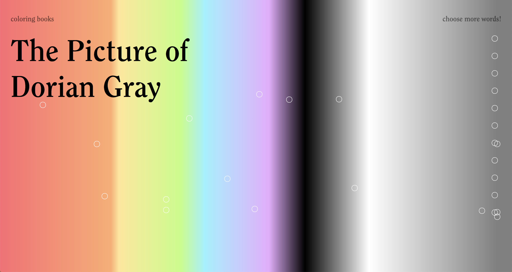

coloring books
I worked on Coloring Books, a project to see the colors of literature with three other students at Hack@Brown. Over the course of eight hours, we designed and developed the site, during which I was primarily responsible for calculating the colors in different works of literature. I developed a Python script to find the frequency of colors in each story. The frequency values are then mapped onto the site. For instance, Little Red Riding Hood is displayed in all red, because red is only the color mentioned in the story.
The colors were beautiful to visualize, but we were also interested to explore if color could be embedded in the words themselves. For instance, what color is sadness? Using Google's word2vec model, on each story to find the words that are closely associated with each color.
A rainbow of my favorite word-colors:
Red of Edgar Allan Poe: universe attack if, wherewith apart three day dignified unusual singularly-marked
Orange in Picture of Dorian Grey: orange wry beetle spasm town, chests welled hell brown, defeats lamplit
Yellow in Yellow Wallpaper: yellow thought course, spots of henry design wall, pattern lie feeling
Green in Gatsby: green slowly wised go surviving ticked cody towel continued sang, much
Blue in Moby Dick: blue another get one little still it, two thing last without
Purple in Lovecraft: purple scramble sure rattling trunk outside; according sunlight 1692, mouths substance
White in Frankenstein: white wallet attentions chains, fight, disappointment, complaints? august, judge, pursuit renewing
Grey in Les Miserable: grey immense garden, covered allowed forth night, violent english yet outside
Black in Jane Eyre: black little one must would like you, never me, could still
This project was an intersection of our group’s interest in design, literature, and the cool things word2vec can do. It was my first hackathon and I loved the energy. The process of creating, coding, and last-minute problem solving was exhilarating.
You can view the site or the code to color your favorite book!